[//]: (----------------------------------------------------------------------) class: center middle # Pyglmnet .center[ 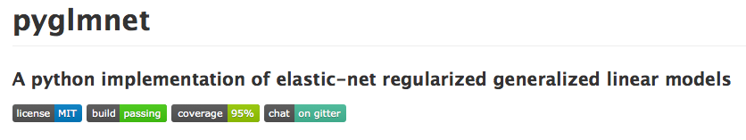 <div> <i class="fa fa-github"></i> github.com/pavanramkumar/pyglmnet </div> <div> <i class="fa fa-newspaper-o"></i> pavanramkumar.github.io/pyglmnet </div> ] <br> <br> .left[ <ul class="fa-ul"> <li><i class="fa-li fa fa-github"></i>pavanramkumar</li> <li><i class="fa-li fa fa-twitter"></i>@desipoika</li> <li><i class="fa-li fa fa-home"></i>pavanramkumar.github.io</li> </ul> ] --- [//]: (----------------------------------------------------------------------) # Why this package? **Elastic net** is an excellent algorithm for regularization. 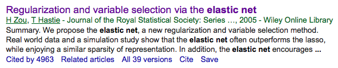 Fast implementation in widely popular **R** package **`glmnet`** for **Generalized Linear Models**. 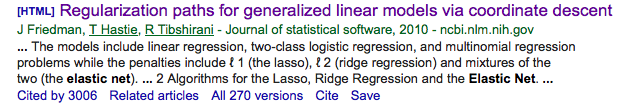 Scikit-learn has an implementation only for linear and logistic models. | | `normal` | `logistic` | `poisson` | `softplus` | `multinomial` | `cox` | |:--------------|:---------:|:----------:|:----------:|:----------:|:-------------:|:--------:| |`R` | `x` | `x` | `x` | -- | -- | `x` | |`scikit-learn` | `x` | `x` | -- | -- | -- | -- | |`pyglmnet` | `x` | `x` | `x` | `x` | `x` | -- | --- [//]: (----------------------------------------------------------------------) # @KordingLab, Northwestern .center[ <img src="figures/pidata.png" style="width: 800px;"/> ] --- [//]: (----------------------------------------------------------------------) # Machine Learning for Brain and Behavior .center[ 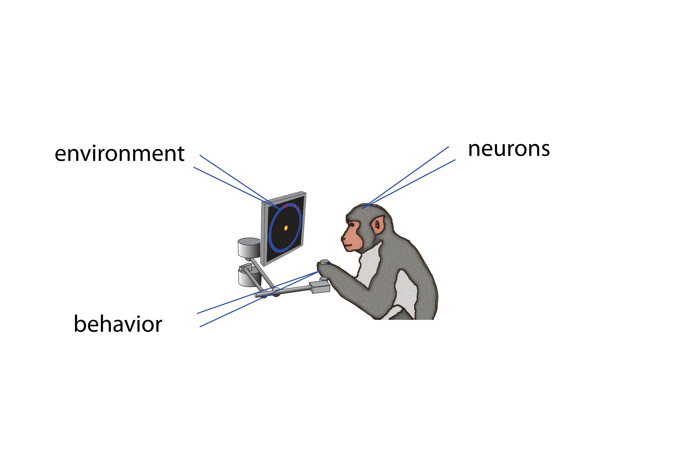 ] --- # Machine Learning for Brain and Behavior .center[ 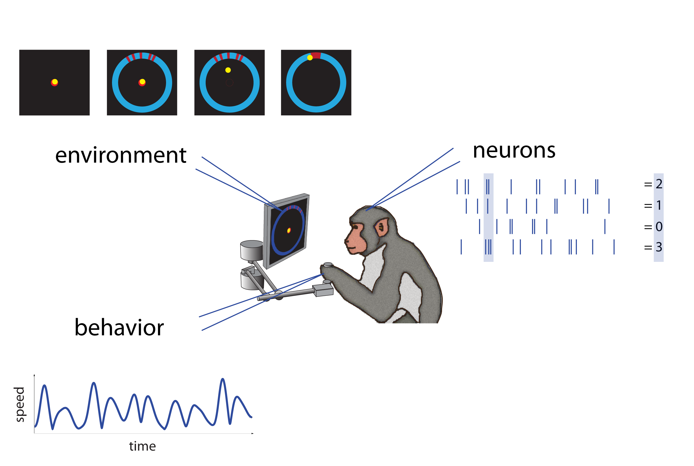 ] --- [//]: (----------------------------------------------------------------------) # Linear vs. Poisson Models 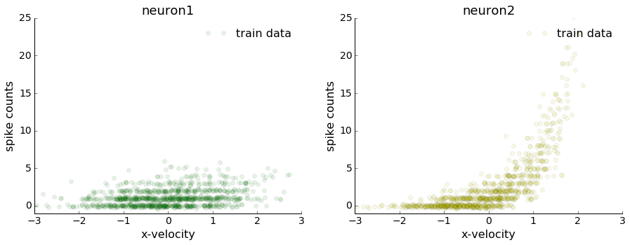 See [Linear vs. Poisson notebook](http://nbviewer.jupyter.org/github/pavanramkumar/pydata-chicago-2016/blob/master/notebooks/Linear_vs_Poisson.ipynb). --- # Linear vs. Poisson Models 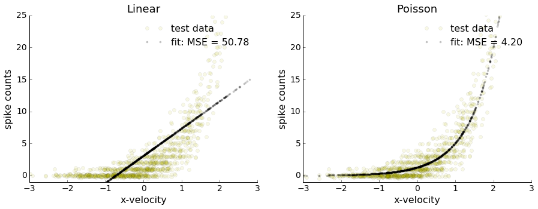 -- 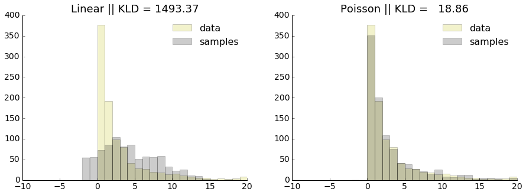 --- [//]: (----------------------------------------------------------------------) # Linear Regression ### Predict - a target variable, `\(y\)` - as a linear combination of `\(p\)` predictors, `\(\mathbf{x} = [x_{1}, \dots, x_{p}]\)`. - from a set of `\(n\)` observations `\(\left\{\mathbf{x}_i, y_i\right\}\)`. $$ \hat{y} = \beta_0 + \beta_1 x_1 + \dots + \beta_p x_p $$ - In matrix form: $$ \mathbf{\hat{y}} = \beta_0 + \mathbf{X} \mathbf{\beta} $$ where `\(\mathbf{\hat{y}} = [\hat{y}_1, \dots, \hat{y}_n]\)` and `\(\mathbf{X} = [\mathbf{x}_1^T, \dots, \mathbf{x}_n^T]\)`. ```python def predict(X, beta0, beta): y = beta0 + np.dot(X, beta) return y ``` --- [//]: (----------------------------------------------------------------------) # Linear Regression ### Mean Squared Loss - To fit the parameters `\(\left\{\beta_0, \beta\right\}\)`, we minimize the mean squared loss: $$ J = \frac{1}{2n} \sum_i (y_i - \hat{y}_i)^2 = \frac{1}{2n} \sum_i (y_i - (\beta_0 + \mathbf{x}_i^T \mathbf{\beta}))^2 $$ - In matrix form: $$ J = \frac{1}{2n} (\mathbf{y} - (\beta_0 + \mathbf{X} \mathbf{\beta}))^T (\mathbf{y} - (\beta_0 + \mathbf{X} \mathbf{\beta})) $$ ```python def loss(X, y, beta0, beta): n = y.shape[0] yhat = predict(X, beta0, beta) err = y - yhat J = 1. / (2. * n) * np.dot(err.T , err) return J ``` --- [//]: (----------------------------------------------------------------------) # Linear Regression ### Negative Log Likelihood Loss - Real data is noisy. Let's assume random Gaussian noise. $$ \mathbf{y} = \beta_0 + \mathbf{X}\beta + \epsilon; \epsilon \sim \mathcal{N}(\mathbf{0}, \sigma^2\mathbf{I}) $$ - The likelihood of observing the target variables, given the predictors is: $$ P(\mathbf{y} | \mathbf{X}; \beta_0, \beta) \propto \prod_i \exp\left\[-\frac{1}{2} (y_i - \beta_0 - \mathbf{x}_i^T \beta)^2\right\] $$ - The negative log-likelihood function is identical to the sum squared loss! $$ -\mathcal{L}(\beta_0, \beta) = \frac{1}{2n}\sum_i (y_i - \hat{y}_i)^2 $$ ??? Thus, we can write out the loss as negative log-likelihood for any distribution! --- [//]: (----------------------------------------------------------------------) # Generalized Linear Models Recall that for linear regression $$ \mathbf{y} = \beta_0 + \mathbf{X}\beta + \epsilon; \epsilon \sim \mathcal{N}(\mathbf{0}, \sigma^2\mathbf{I}) $$ Thus, `\(\mathbf{y}\)` is a multivariate normal distribution with mean function `\(\mu\)`. $$ \mathbf{y} \sim \mathcal{N}(\mathbf{\mu}, \sigma^2\mathbf{I}); \mathbf{\mu} = \beta_0 + \mathbf{X}\beta $$ This is a special case of GLMs: $$ \mathbf{y} \sim \text{ExpFamily}(\mathbf{\mu}, \Theta); \mathbf{\mu} = q(\beta_0 + \mathbf{X}\beta) $$ where - `\(q(.)\)` is a pointwise nonlinearity, and - `\(\text{ExpFamily}(\mathbf{\mu}, \Theta)\)` is any pdf in the exponential family, with mean function `\(\mathbf{\mu}\)` and parameters `\(\Theta\)`. ??? Using this paramterization, GLMs allow us to model target variables `\(\mathbf{y}\)` that take on different ranges (e.g. binary variables, counts) and distributions, using real-valued predictors `\(\mathbf{X}\)`. --- [//]: (----------------------------------------------------------------------) # Example: Logistic Regression Consider the binary classification scenario, where `\(y_i\)`'s are binary random variables. `\(\mathbf{y} = \{y_i\}\)` where `\(y_i \in \{0, 1\}\)`. GLMs are fully specified by the nonlinearity `\(q(z)\)` and the noise distribution. #### Assumption 1: Nonlinearity We set `\(q(z) = \sigma(z) = \frac{1}{1 + e^{-z}}\)`, which is the sigmoid function, with domain `\((-\infty, \infty)\)`, and range `\([0, 1]\)`. ```python def sigmoid(z): s = np.exp(z) / (1 + np.exp(z)) return s def predict(X, beta0, beta): y = sigmoid(beta0 + np.dot(X, beta)) return y ``` --- [//]: (----------------------------------------------------------------------) # Example: Logistic Regression #### Assumption 2: Noise distribution We assume that `\(y_i\)`'s are Bernoulli random variables with mean `\(p\)`. `\(P(y_i = 1) = p; P(y_i = 0) = 1-p\)`. We model `\(p \sim \hat{y}_i = q(\beta_0 + \mathbf{x}_i^T\beta)\)`. Let's write out the negative log-likelihood of the data given these assumptions. $$ P(\mathbf{y} | \mathbf{X}; \beta_0, \beta) = \prod_i p^{y_i} (1-p)^{(1-y_i)} $$ $$ -\mathcal{L}(\beta_0, \beta) = -\Bigg[\sum_i y_i log(\hat{y}_i) + (1-y_i) log(1-\hat{y}_i) \Bigg] $$ This is known as the cross entropy loss. ```python def loss(X, y, beta0, beta): yhat = predict(X, beta0, beta) J = -np.sum(y * np.log(yhat) + \ (1 - y) * np.log(1 - yhat)) return J ``` --- [//]: (----------------------------------------------------------------------) # Example: Poisson Regression Consider the prediction problem where `\(y_i\)`'s are count variables. `\(\mathbf{y} = \{y_i\}\)` where `\(y_i \in \{0, 1, 2, \dots \}\)`. #### Assumption 1: Nonlinearity We set `\(q(z) = \exp(z)\)`, with domain `\((-\infty, \infty)\)`, and range `\([0, \infty)\)`. ```python def predict(X, beta0, beta): y = np.exp(beta0 + np.dot(X, beta)) return y ``` #### Assumption 2: Noise distribution We assume that `\(y_i\)`'s are Poisson random variables with mean `\(\lambda\)`. We model this as `\(\lambda \sim \hat{y}_i = q(\beta_0 + \mathbf{x}_i^T\beta)\)`. --- [//]: (----------------------------------------------------------------------) # Example: Poisson Regression Let's write out the negative log-likelihood of the data given these assumptions. $$ P(y_i = k) = \frac{e^{-\lambda} \lambda^k}{k!} $$ $$ P(\mathbf{y} | \mathbf{X}; \beta_0, \beta) \propto \prod_i e^{-\lambda_i} (\lambda_i)^{y_i} $$ $$ -\mathcal{L}(\beta_0, \beta) = -\Bigg[\sum_i y_i log(\hat{y}_i) -\hat{y}_i \Bigg] $$ This is known as the Poisson loss. ```python def loss(X, y, beta0, beta): yhat = predict(X, beta0, beta) J = -np.sum(y * np.log(yhat) - yhat) return J ``` --- [//]: (----------------------------------------------------------------------) # Optimization Recalling our calculus 101, we minimize the loss `\(J\)` by taking the derivative (aka gradient) and setting it to zero. #### Linear Regression .left[`\( J = \frac{1}{2n} (\mathbf{y} - \mathbf{\hat{y}})^T (\mathbf{y} - \mathbf{\hat{y}}) \)`] .left[`\( \frac{\partial J}{\partial \beta_0} = -\frac{1}{n}(\mathbf{y} - \mathbf{\hat{y}}) = -\frac{1}{n}(\mathbf{y} - \beta_0 - \mathbf{X}\beta) = 0 \)`] .left[`\( \frac{\partial J}{\partial \beta} = -\frac{1}{n}\mathbf{X}^T(\mathbf{y} - \mathbf{\hat{y}}) = -\frac{1}{n}\mathbf{X}^T(\mathbf{y} - \beta_0 - \mathbf{X}\beta) = 0 \)`] .left[ ```python def grad_loss(X, y, beta0, beta): n = y.shape[0] yhat = predict(X, beta0, beta) err = y - yhat grad_beta0 = -1. / n * err grad_beta = -1. / n * np.dot(X.T, err) return grad_beta0, grad_beta ``` ] --- [//]: (----------------------------------------------------------------------) # Optimization Recalling our calculus 101, we minimize the loss `\(J\)` by taking the derivative (aka gradient) and setting it to zero. #### Logistic Regression .left[`\( J = -\frac{1}{n} \left\{ \mathbf{y}^T \log\left\{\mathbf{\hat{y}}\right\} + (\mathbf{1} - \mathbf{y})^T \log\left\{\mathbf{1} - \mathbf{\hat{y}}\right\} \right\} \)`] .left[`\( \frac{\partial J}{\partial \beta_0} = -\frac{1}{n}(\mathbf{y} - \mathbf{\hat{y}}) = -\frac{1}{n}(\mathbf{y} - \mathbf{1}./ (\mathbf{1} + \exp(-\beta_0 - \mathbf{X}\beta))) = 0 \)`] .left[`\( \frac{\partial J}{\partial \beta} = -\frac{1}{n}\mathbf{X}^T(\mathbf{y} - \mathbf{\hat{y}}) = -\frac{1}{n}\mathbf{X}^T(\mathbf{y} - \mathbf{1}./ (\mathbf{1} + \exp(-\beta_0 - \mathbf{X}\beta))) = 0 \)`] .left[ ```python def grad_loss(X, y, beta0, beta): n = y.shape[0] yhat = predict(X, beta0, beta) err = y - yhat grad_beta0 = -1. / n * err grad_beta = -1. / n * np.dot(X.T, err) return grad_beta0, grad_beta ``` ] --- [//]: (----------------------------------------------------------------------) # Optimization We cannot always solve this system of equations in closed form. But we can arrive at a unique solution by iteratively taking small steps against the gradient. This is called **gradient descent**. .center[ `\( \beta_0 \leftarrow \beta_0 - \zeta * \frac{\partial J}{\partial \beta_0} \)` `\( \beta \leftarrow \beta - \zeta * \frac{\partial J}{\partial \beta} \)` ] ```python def fit(X, y, max_iter, learning_rate): p = X.shape[1] beta0_hat = (1. / (p + 1)) * np.random.randn(1) beta_hat = (1. / (p + 1)) * np.random.randn(p, 1) for iter in np.range(max_iter): grad_beta0, grad_beta = grad_loss(X, y, beta0_hat, beta_hat): beta0_hat += -learning_rate * grad_beta0 beta_hat += -learning_rate * grad_beta return beta0_hat, beta_hat ``` --- [//]: (----------------------------------------------------------------------) # Regularization .center[ 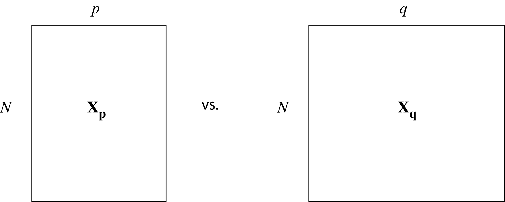 ] On the same dataset size (\(N\)), a model with more parameters (\(q > p\)) will fit better on the training set but may generalize worse on a test set. This needs to be penalized. .left[ $$ L_2 \text{ penalized loss: } -\mathcal{L}(\beta_0, \beta) + \lambda \frac{1}{2}||\beta||^2 $$ ] ```python def L2loss(X, y, beta0, beta, reg_lambda): J = loss(X, y, beta0, beta) + 0.5 * reg_lambda * np.sum(beta ** 2) return J def grad_L2loss(X, y, beta0, beta, reg_lambda): grad_beta0, grad_beta = grad_loss(X, y, beta0, beta) grad_beta += reg_lambda * beta return grad_beta0, grad_beta ``` --- [//]: (----------------------------------------------------------------------) # Ridge Regression Imposing an `\(L_2\)` penalty is known as ridge regression. It penalizes large `\(\beta\)`'s. Example logistic regression: `\(N = 500, p = 100\)`. .center[ 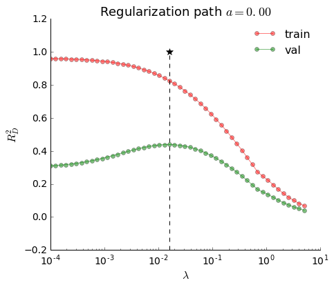 <img src="figures/reg-00-L2-003.png" style="width: 350px;"/> ] See [Regularization notebook](http://nbviewer.jupyter.org/github/pavanramkumar/pydata-chicago-2016/blob/master/notebooks/Regularization.ipynb). --- [//]: (----------------------------------------------------------------------) # Lasso Regression However, ridge regression doesn't work well when only a few features are predictive. We want something that zeroes out a large number of `\(\beta\)`'s. For this, we can impose an `\(L_1\)` penalty. .left[ $$ L_1\text{ penalized loss: } -\mathcal{L}(\beta_0, \beta) + \lambda ||\beta||_1 $$ ] ```python def L1loss(X, y, beta0, beta, reg_lambda): J = loss(X, y, beta0, beta) + reg_lambda * np.sum(np.abs(beta)) ``` --- [//]: (----------------------------------------------------------------------) # Ridge vs. Lasso Example logistic regression: `\(N = 200, p = 500\)`. See [Regularization notebook](http://nbviewer.jupyter.org/github/pavanramkumar/pydata-chicago-2016/blob/master/notebooks/Regularization.ipynb). .center[ 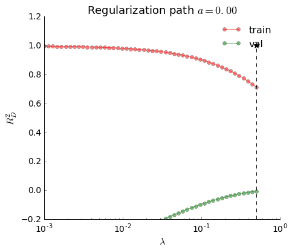 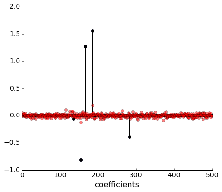 ] .center[ 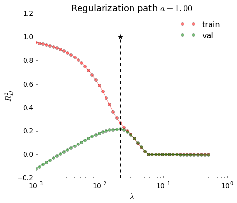 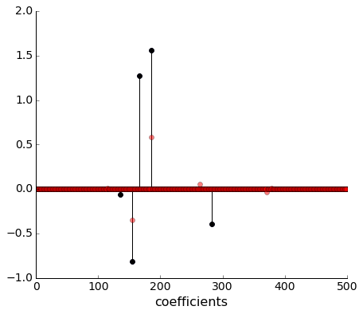 ] --- [//]: (----------------------------------------------------------------------) # Elastic net Regression Best of both worlds! .left[ $$ \text{elastic net loss: } -\mathcal{L}(\beta_0, \beta) + \lambda \Big\[ \frac{1}{2}(1-\alpha)||\beta||^2 + \alpha ||\beta||_1 \Big \] $$ ] `\(\alpha\)` is known as the L1-ratio. ```python def enetloss(X, y, beta0, beta, reg_lambda, alpha): J = loss(X, y, beta0, beta) + reg_lambda * \ ((1 - alpha) * 0.5 * np.sum(beta ** 2) + \ alpha * np.sum(np.abs(beta))) return J ``` --- [//]: (----------------------------------------------------------------------) # Advanced Optimization #### Projected gradient Note that `\(||\beta||_1\)` is not differentiable at `\(\beta = 0\)`. To deal with this, we use a technique called projected gradient. We update: `\( \beta \leftarrow \mathcal{S}_{\lambda}\left(\beta - \zeta * \frac{\partial J}{\partial \beta}\right), \)` where `\( \mathcal{S}_{\lambda}(x) = 0 \text{, if } |x| \lt \lambda, sgn(x) (|x| - \lambda) \text{, otherwise}. \)` `\(\mathcal{S}_{\lambda}(x)\)` is known as the soft threshold or proximal operator. ```python def prox(x, l): return np.sign(X) * (np.abs(X) - l) * (np.abs(X) > l) def fit(X, y): # ... beta_hat = prox(beta_hat - learning_rate * grad_beta, reg_lambda) ``` --- [//]: (----------------------------------------------------------------------) # Advanced Optimization #### Warm Restarts In practice, we fit the model not for a single value of `\(\lambda\)` but for a **regularization path**, `\(\lambda = \left\{\lambda_{max}, \dots, \lambda_{min}\right\}\)`. Starting with `\(\lambda_{max}\)`, we solve for `\(\lambda_l\)`, and then initialize for the subsequent `\(\lambda_{l+1}\)` with this solution: `\( \beta^0(\lambda_{l+1}) = \beta^{opt}(\lambda_l). \)` This is known as a **warm restart** and leads to much faster convergence. ```python # Warm initialize parameters def fit(X, y): #... for l, rl in enumerate(reg_lambda): fit_params.append({'beta0': beta0_hat, 'beta': beta_hat}) if l == 0: fit_params[-1]['beta0'] = beta0_hat fit_params[-1]['beta'] = beta_hat else: fit_params[-1]['beta0'] = fit_params[-2]['beta0'] fit_params[-1]['beta'] = fit_params[-2]['beta'] ``` --- [//]: (----------------------------------------------------------------------) # Advanced Optimization #### Active Set For large `\(\lambda\)`'s, the projected gradient method `\(\beta \leftarrow \mathcal{S}_\lambda(\beta - \zeta * J'(\beta))\)` sets a lot of `\(\beta\)`'s to zero. For problems with many predictors `\(p\)`, it's much faster to store an active set `\(\mathcal{K}\)` of parameter indices and only update non-zero parameters in each iteration. If `\(\beta_k\)` has been zeroed out at iteration `\(t\)`, we remove its index from the active set: `\(\mathcal{K} \leftarrow \mathcal{K} - \left\{k\right\}\)`. Thus, we only update a smaller and smaller subset of `\(\beta\)`'s with an increasing number of iterations. --- [//]: (----------------------------------------------------------------------) # Advanced Optimization #### Cyclic Coordinate Descent with Newton update [Optimization notebook](http://nbviewer.jupyter.org/github/pavanramkumar/pydata-chicago-2016/blob/master/notebooks/Optimization.ipynb). The active set strategy allows us to do better than vanilla gradient descent. In each iteration, we update each `\(\beta_k \in \mathcal{K}\)` with a Newton step. Gradient step: `\(\beta - \zeta * J'(\beta)\)` vs. Newton step: `\(\beta - [J''(\beta)]^{-1} * J'(\beta)\)` 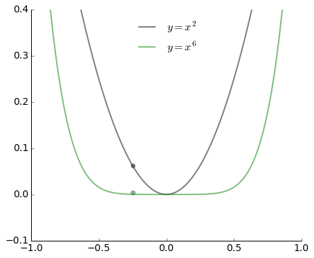 --- [//]: (----------------------------------------------------------------------) # Advanced Optimization: Sympy [Sympy notebook](http://nbviewer.jupyter.org/github/pavanramkumar/pydata-chicago-2016/blob/master/notebooks/Sympy.ipynb). Take the opportunity to check your calculus work with `sympy`. #### Linear Regression ```python from sympy import symbols, diff, simplify # Define symbols x1, x2, y, b0, b1, b2 = symbols("x1 x2 y b0 b1 b2") # Predict yhat = b0 + b1 * x1 + b2 * x2 # Compute loss loss = 0.5 * (y - yhat) ** 2 # Differentiate print simplify(diff(loss, b0)) print simplify(diff(loss, b1)) print simplify(diff(loss, b2)) ``` ``` 1.0*b0 + 1.0*b1*x1 + 1.0*b2*x2 - 1.0*y 1.0*x1*(b0 + b1*x1 + b2*x2 - y) 1.0*x2*(b0 + b1*x1 + b2*x2 - y) ``` --- [//]: (----------------------------------------------------------------------) # Advanced Optimization: Sympy #### Logistic Regression ```python from sympy import symbols, diff, simplify # Define symbols x1, x2, y, b0, b1, b2 = symbols("x1 x2 y b0 b1 b2") # Predict z = b0 + b1 * x1 + b2 * x2 yhat = 1 / (1 + exp(-z)) # Compute loss loss = y * log(yhat) + (1 - y) * log(1 - yhat) # Differentiate print simplify(diff(loss, b0)) print simplify(diff(loss, b1)) print simplify(diff(loss, b2)) ``` ``` (y*exp(-b0 - b1*x1 - b2*x2) + y - 1)/(exp(-b0 - b1*x1 - b2*x2) + 1) x1*(y*exp(-b0 - b1*x1 - b2*x2) + y - 1)/(exp(-b0 - b1*x1 - b2*x2) + 1) x2*(y*exp(-b0 - b1*x1 - b2*x2) + y - 1)/(exp(-b0 - b1*x1 - b2*x2) + 1) ``` --- [//]: (----------------------------------------------------------------------) # Advanced Optimization: Theano [Theano notebook](http://nbviewer.jupyter.org/github/pavanramkumar/pydata-chicago-2016/blob/master/notebooks/Theano.ipynb). `theano` does all the differentiation for you! ```python import theano # Data as symbolic variables (theano tensors) X = theano.tensor.dmatrix('X') y = theano.tensor.dvector('y') # Parameters as shared variables beta = theano.shared(1. / (p + 1) * np.random.randn(p), name='beta') beta0 = theano.shared(0., name='beta0') ``` ```python # Construct Theano expression graph # Compute the prediction yhat = theano.tensor.dot(X, beta) + beta0 # Define the mean square error cost loss = 1. / (2. * n) * (y -yhat) ** 2 # Compute the gradient of the loss grad_beta0, grad_beta = theano.tensor.grad(loss, [beta0, beta]) ``` --- [//]: (----------------------------------------------------------------------) # Advanced Optimization: Theano ```python # Compile fit = theano.function( inputs=[X, y], outputs=[yhat, loss], updates=((beta0, beta0 - 0.01 * grad_beta0), (beta, beta - 0.01 * grad_beta))) predict = theano.function(inputs=[X], outputs=yhat) ``` ```python # Fit on training set max_iter = 1000 for i in range(max_iter): ytrain_hat, train_err = fit(Xtrain, ytrain) # Predict on test set ytest_hat = predict(Xtest) ``` --- # Implementation - Object-oriented: single `GLM()` class for all methods. - Docstrings in conformity to `scikit-learn` best practices. - `fit()`, `predict()`, and `score()` methods. - `simulate()` method for drawing samples from a model. - Estimators can be sliced: `glm[0].predict(X_test)`. - Unit tests and continuous integration. ```python class GLM(object): """Generalized Linear Model (GLM) This class implements elastic-net regularized generalized linear models. The core algorithm is defined in the article. min_(beta0, beta) [-L + lamda * P] where L is log-likelihood term P is elastic-net penalty term Parameters ---------- distr: str distribution family can be one of the following 'poisson' or 'poissonexp' or 'normal' or 'binomial' or 'multinomial' default: 'poisson' ``` --- # Documentation .center[ 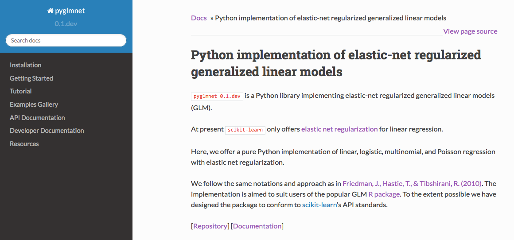 ] .right[ <div> <i class="fa fa-newspaper-o"></i> pavanramkumar.github.io/pyglmnet </div> ] --- # Summary #### What did we learn? - Mean Squared Error is special case of Negative Log Likelihood (NLL) - GLMs = Linear regression + Nonlinearity + Noise model - Regularize with elastic net = Ridge + Lasso - Optimize penalized NLL with gradient descent - Optimize better with active set + coordinate descent + Newton update - Use `sympy` for your calculus or leave it all to `theano`! #### What next? - [Slides and notebooks](https://github.com/pavanramkumar/pydata-chicago-2016) - Clone `pyglmnet` and start applying it to your data! - Code for `pyglmnet` and submit pull requests! .right[ <div> <i class="fa fa-github"></i> github.com/pavanramkumar/pyglmnet </div> <div> <i class="fa fa-newspaper-o"></i> pavanramkumar.github.io/pyglmnet </div> ] --- [//]: (----------------------------------------------------------------------) # Credits #### Development and Tests - Mainak Jas (Alex Gramfort's Group, Paris) - Titipat Achakulvisut (KordingLab, Chicago) - Daniel Acuna (Assistant Professor, iSchool, Syracuse) - Hugo Fernandes (Data Science Fellow, Insight) #### Documentation - Mark Albert's interns (Loyola U, Chicago) #### My GLM gurus - Konrad Kording (Professor, Northwestern) - Sara Solla (Professor, Northwestern) .right[ <div> <i class="fa fa-github"></i> github.com/pavanramkumar/pyglmnet </div> <div> <i class="fa fa-newspaper-o"></i> pavanramkumar.github.io/pyglmnet </div> ]